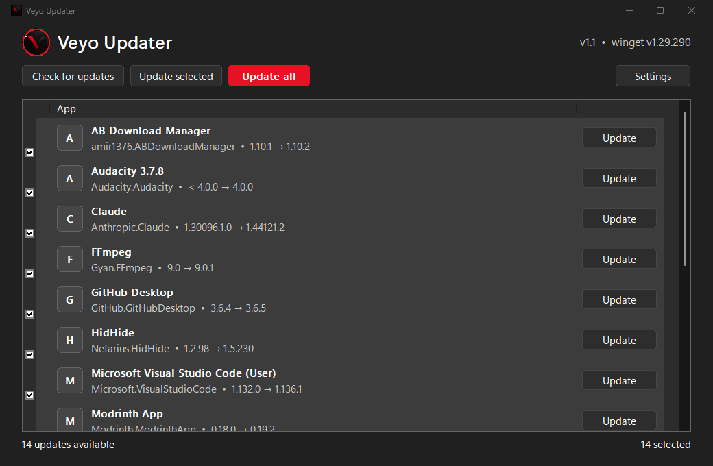

VEYOUPDATER
Update every app like a pro. One lightweight window, live progress,
zero installs — ready in seconds.
powershell -c "iwr https://github.com/mrlurix/veyo-updater/releases/latest/download/VeyoUpdater_Portable.zip -OutFile $env:TEMP\veyo.zip; Expand-Archive $env:TEMP\veyo.zip $env:USERPROFILE\VeyoUpdater -Force; & $env:USERPROFILE\VeyoUpdater\VeyoUpdater.exe"
Everything you need to update
One click lists every available update with a robust parser that handles long names, BOM and odd spacing.
Every app row has its own Update button — or update a hand-picked selection, or everything at once.
Upgrades always run elevated through a UAC prompt. Cancelling shows a clear message — never a silent failure.
Watch the stage (Preparing → Downloading → Installing → Done), a smooth percent bar and a per-app counter.
Set a download countdown, periodic auto-checks, and what happens when finished — even shutting down the PC.
A single ~430 KB exe with the C runtime linked statically. No installer, no registry, no VC++ Redist, no .NET.
Take a look

Up and running in a minute
Run the exe — no setup, it checks for updates on launch
Review Store-style rows with current and new versions
Approve the UAC prompt and watch live progress